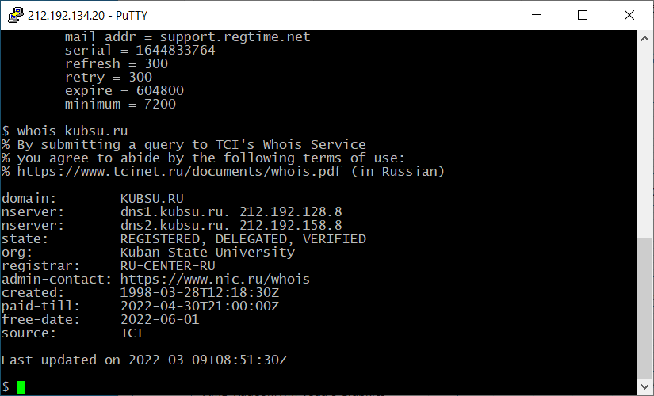

-
Подключаемся по SSH с помощью клиента Putty к учебному серверу:
-
С помощью команды ping на узнаём IP-адрес веб-сервера kubsu.ru:
-
С помощью команды nslookup просмотрим A-записи домена kubsu.ru:

-
С помощью команды nslookup просмотрим MX-записи домена kubsu.ru:

-
Так же (при помощи nslookup) проверим A-записи и MX-записи домена kubsu-dev.ru:

-
При помощи команды whois узнаём дату регистрации домена kubsu.ru:

-
Аналогично для kubsu-dev.ru: